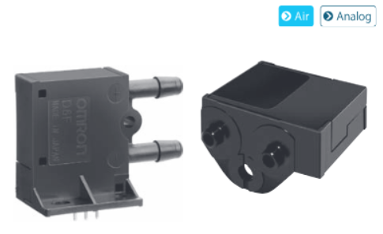
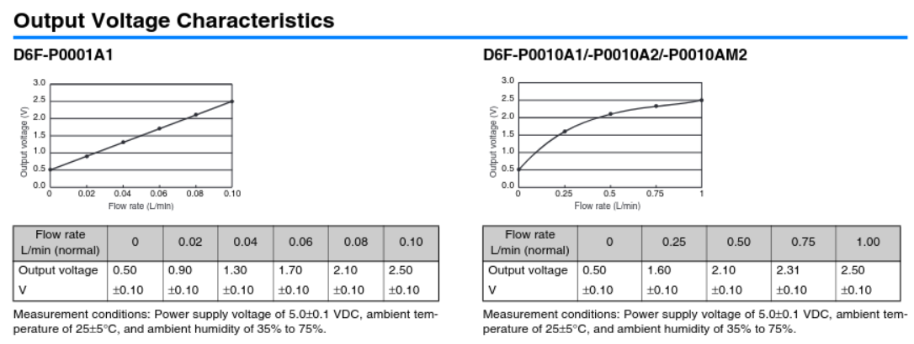
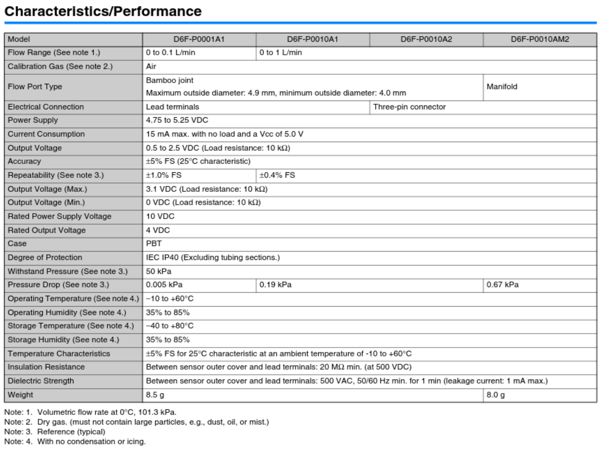

title: Omron D6F-P
created: 2025-03-16 17:04
tags: []Omron D6F-P

An analog flow sensor.
There are two main variants:
Given the general ISO 9053-1 Requirements, both can be a reasonable option based on the specimen surface area of choice.
Both variants can be bought for approx. €40 at Mouser and probably also elsewhere.
Note that such sensor needs to be paired with a decent ADC.


The choice of flow sensor depends on the dimensions (The target flow speed across the specimen is 0.5 mm/s, while the sensors are typically volumetric or mass based). For square samples, the target flow rate would be:
Given the Claude AI. Should be debugged for later use. Features the 04aa01 ADS1115 chip (I2C) and 01aa02 Sensirion SDP810-125PA.
import numpy as np
from scipy import interpolate
import time
from ads1115 import ADS1115
from sdp810 import SDP810
class FlowSensorConverter:
"""
Convert voltage readings from Omron D6F-P flow sensor to flow rates
using spline interpolation of calibration values.
"""
def __init__(self, calibration_dict, interpolation_kind='cubic'):
"""
Initialize the converter with calibration values.
Parameters:
calibration_dict -- Dictionary with {flow_rate: voltage} pairs
interpolation_kind -- Type of spline interpolation ('linear', 'cubic', etc.)
"""
# Extract flow rates and voltages from the dictionary
flow_rates = list(calibration_dict.keys())
voltages = list(calibration_dict.values())
# Sort them by voltage to ensure proper interpolation
sorted_pairs = sorted(zip(voltages, flow_rates))
voltages_sorted = [pair[0] for pair in sorted_pairs]
flow_rates_sorted = [pair[1] for pair in sorted_pairs]
# Create the interpolation function
# Note: we're creating voltage->flow interpolation since we'll be measuring voltage
self.interpolator = interpolate.interp1d(
voltages_sorted,
flow_rates_sorted,
kind=interpolation_kind,
bounds_error=False, # Don't raise error for out-of-bounds values
fill_value=(flow_rates_sorted[0], flow_rates_sorted[-1]) # Extrapolate with edge values
)
def voltage_to_flow(self, voltage):
"""
Convert voltage reading to flow rate using the calibration spline.
Parameters:
voltage -- The voltage reading from the sensor (float)
Returns:
flow_rate -- The interpolated flow rate
"""
return float(self.interpolator(voltage))
class OmronD6FP:
"""
Interface for Omron D6F-P flow sensor using ADS1115 for analog reading.
"""
def __init__(self, adc, adc_channel=0, calibration_dict=None):
"""
Initialize the sensor interface.
Parameters:
adc -- Instance of ADS1115 class
adc_channel -- The ADC channel the sensor is connected to (0-3)
calibration_dict -- Dictionary with {flow_rate: voltage} pairs for calibration
"""
self.adc = adc
self.adc_channel = adc_channel
# Use default calibration if none provided
if calibration_dict is None:
# Example calibration values for D6F-P - REPLACE WITH ACTUAL VALUES
calibration_dict = {
0.0: 1.0, # 0 L/min -> 1.0V
5.0: 2.0, # 5 L/min -> 2.0V
10.0: 3.0, # 10 L/min -> 3.0V
20.0: 4.0, # 20 L/min -> 4.0V
50.0: 5.0 # 50 L/min -> 5.0V
}
self.converter = FlowSensorConverter(calibration_dict)
def read_voltage(self):
"""Read raw voltage from the sensor."""
return self.adc.read_voltage(self.adc_channel)
def read_flow(self):
"""Read and convert sensor voltage to flow rate."""
voltage = self.read_voltage()
return self.converter.voltage_to_flow(voltage)
# Example usage
if __name__ == "__main__":
# Initialize the ADC
adc = ADS1115()
# Example calibration for demonstration (replace with actual values from datasheet)
# Format: {flow_rate (L/min): output_voltage (V)}
d6f_calibration = {
0.0: 1.0,
5.0: 1.5,
10.0: 2.0,
20.0: 3.0,
30.0: 4.0,
50.0: 5.0
}
# Initialize the flow sensor
flow_sensor = OmronD6FP(adc, adc_channel=0, calibration_dict=d6f_calibration)
# Optional: Initialize pressure sensor
try:
pressure_sensor = SDP810()
pressure_available = True
except:
print("Pressure sensor not available")
pressure_available = False
try:
while True:
# Read flow rate
flow_voltage = flow_sensor.read_voltage()
flow_rate = flow_sensor.read_flow()
print(f"Flow sensor voltage: {flow_voltage:.3f} V")
print(f"Flow rate: {flow_rate:.2f} L/min")
# Read pressure if available
if pressure_available:
pressure = pressure_sensor.read_pressure()
if pressure is not None:
print(f"Differential Pressure: {pressure:.2f} Pa")
print("---")
time.sleep(1)
except KeyboardInterrupt:
print("Measurement stopped by user")
# Clean up
if pressure_available:
try:
pressure_sensor.stop_measurement()
except:
pass